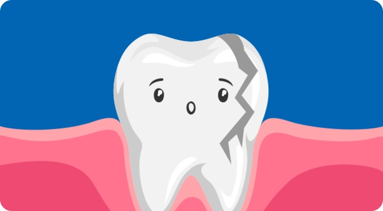

치아 외상 시 올바른 대처 방법
"우리 아이가 3살인데, 어제 집에서 넘어져서 식탁에 얼굴을 부딪쳐 치아가 들어갔어요. 나중에 영구치 나는데 문제가 없을까 고민이 됩니다."
치아 외상이란?
물리적인 외부 충격으로 치아가 손상을 받은 경우로 흔히 우발적인 사고에 의해 발생합니다. 연령별 외상 발생 빈도는 걷기 시작하는 시기인 2~5세와 활동이 활발한 시기인 8~10세 학령기에 집중돼 있습니다. 유치를 가진 학령 전 어린이는 외상에 의한 치아 빠짐 등 치아 위치 변화가 잘 일어나고, 영구치를 가진 학령기 어린이·청소년은 치아 부러짐 등이 빈발합니다.
골든 타임 5분 이내
모든 치료에 골든타임이 있듯 치아 외상 치료에도 고든타임이 존재합니다. 영구치가 완전히 빠진 경우 5분 이내에 즉시 재식하는 것이 중요합니다. 그러나 빠진 치아 흙 등에 지저분하게 오염됐다면, 비록 치아를 제자리에 넣지 못하더라도 우유, 식염수 등에 보관해 빠르게 병원에 방문합니다. 만약 치아가 부러져 신경이 노출된 사례라면 구강 내 세균에 의한 감영을 줄이기 위한 적절한 처치로 신경을 살리거나 치아의 성장을 유도합니다.
치아 외상을 피하기 위해 이렇게
- 어린이, 노인, 빈혈·저혈압 등 넘어지기 쉬운 질환 가족 구성원은 더 주의
- 밟고 걸려 넘어질 수 있는 물건은 항상 치워 두기
- 넘어지면 다칠 수 있는 곳에 매트 설치하기
출산 수 일상 생활이 가능하다면 치과 치료도 가능
출산 후 1~2달 이후이거나 모유 수유 중에도 대부분의 치과 진료는 가능합니다 일반적으로 치아에 별다른 문제가 없더라도 출산 후 2개월이 지나면 검진 차원에서 치과를 방문해 전반적인 검사와 치료를 받는 것이 좋습니다.
잇몸의 통증, 충치, 시림 등으로 일상생활이 불편할 정도라면 출산 후 빠른 시일 내에 진료를 받아야 하지만 발치나 치아 교정, 외과적 시술은 출산 6개월 이후로 미루는 것이 좋습니다.
만약 모유 수유 중이라면 항생제나 소염제를 사용하는 발치, 임플란트 치료, 치과용 마취제가 피요한 치료 시에는 모유 수유에 영향을 줄 수 있으므로 치료전 담당의에게 반드시 알리고 치료를 받아야 합니다.